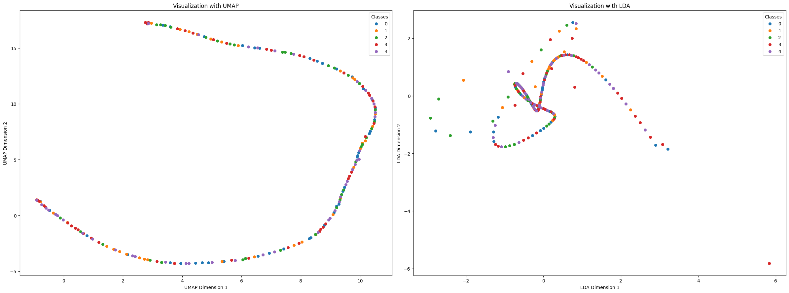
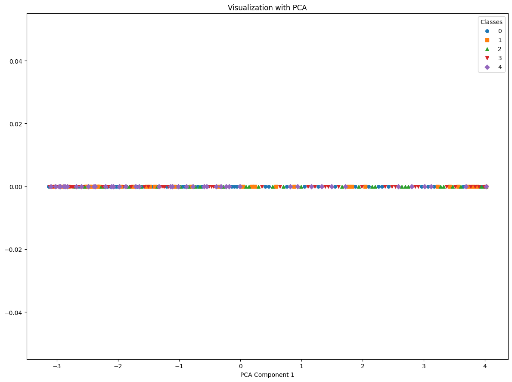
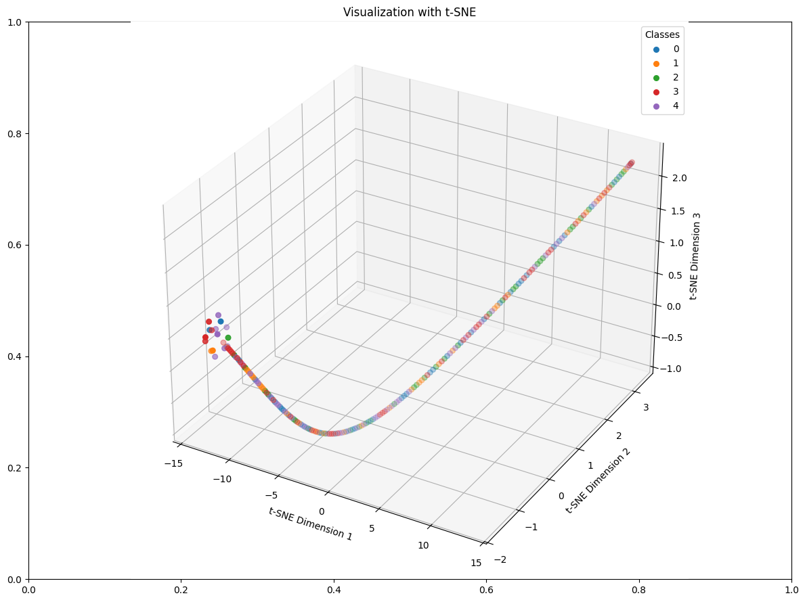
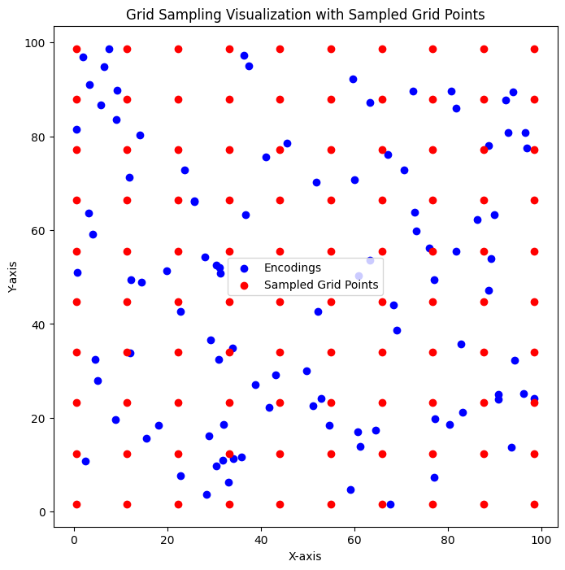

from orbit_generation.data import get_example_orbit_dataLatent Space
Scripts to visualize and explore the Latent Space
Plot 2 dimensions
plot_2d_latent_space
plot_2d_latent_space (latent_representations:numpy.ndarray, labels:numpy.ndarray, latent_stdevs:Optional[numpy.ndarray]=None, features:Optional[Any]=None, feature_names:Optional[List[str]]=None, figsize:tuple=(12, 12), save_path:Optional[str]=None, many_classes:bool=False, show_legend:bool=True, legend_fontsize:int=8, plot_std:bool=True, title:Optional[str]='2D Latent Space Visualization', title_size:int=14, axis_labels:Optional[Tuple[str,str]]=('Dimension 1', 'Dimension 2'), normalize_data:bool=True, **kwargs:Any)
*Plots a 2D latent space visualization with class labels and feature distributions.
Parameters: - latent_representations: np.ndarray, shape (n_samples, 2) The 2D coordinates of the latent representations. - labels: np.ndarray, shape (n_samples,) The class labels for each sample. - features: Optional[Any], shape (n_samples, n_features) The feature data to plot distributions. Can be a list or a NumPy array. - feature_names: Optional[List[str]] The names of the features. - figsize: tuple, default (12, 12) The size of the entire figure. - save_path: Optional[str] Path to save the figure. If None, the plot is not saved. - many_classes: bool, default False If True, uses different markers for classes. - show_legend: bool, default True If True, displays legends. - legend_fontsize: int, default 8 Font size for the legends. - plot_std: bool, default True If True, plots the standard deviation shading for feature distributions. - title: Optional[str], default ‘2D Latent Space Visualization’ Title of the plot. - title_size: int, default 14 Font size for the title. - axis_labels: Optional[Tuple[str, str]], default (‘Dimension 1’, ‘Dimension 2’) Labels for the X and Y axes. - normalize_data: bool, default False If True, normalizes the latent representations. - kwargs: Any Additional keyword arguments passed to scatter plots.*
| Type | Default | Details | |
|---|---|---|---|
| latent_representations | ndarray | ||
| labels | ndarray | ||
| latent_stdevs | Optional | None | |
| features | Optional | None | |
| feature_names | Optional | None | |
| figsize | tuple | (12, 12) | |
| save_path | Optional | None | |
| many_classes | bool | False | |
| show_legend | bool | True | |
| legend_fontsize | int | 8 | |
| plot_std | bool | True | |
| title | Optional | 2D Latent Space Visualization | New title parameter |
| title_size | int | 14 | New title_size parameter |
| axis_labels | Optional | (‘Dimension 1’, ‘Dimension 2’) | New axis_labels parameter |
| normalize_data | bool | True | New parameter to control normalization |
| kwargs | Any | ||
| Returns | None |
plot_combined_2d_latent_space
plot_combined_2d_latent_space (real_latent:numpy.ndarray, synthetic_latent:numpy.ndarray, synthetic_ labels:Union[int,List[int],numpy.ndarray,N oneType]=None, figsize:tuple=(12, 9), save_path:Optional[str]=None, show_legend:bool=True, axis_labels:tuple=('X-axis', 'Y-axis'), title:Optional[str]=None, colormap:str='viridis', feature_title:Optional[str]='Feature Value', label_names:Optional[dict]=None)
*Plots the combined latent space of real and synthetic data. Assumes the latent space is 2D. If synthetic_latent is a 3D array, it plots arrows. Numeric annotations for arrows are only displayed if synthetic_labels are provided.
Args: real_latent (np.ndarray): Latent representations of real data. synthetic_latent (np.ndarray): Latent representations of synthetic data or arrows. synthetic_labels (Optional[Union[int, List[int], np.ndarray]]): Labels for synthetic data. Can be None, a single label, or a list of labels. figsize (tuple): Size of the figure. save_path (Optional[str]): Optional path to save the plot image. show_legend (bool): Flag to show or hide the legend. axis_labels (tuple): Labels for the X and Y axes. title (Optional[str]): Title of the plot. colormap (str): Colormap to use when coloring by features. feature_title (Optional[str]): Title for the feature color bar. label_names (Optional[dict]): Dictionary mapping label values to names for discrete labels.
Returns: None*
| Type | Default | Details | |
|---|---|---|---|
| real_latent | ndarray | Latent representations of real data. | |
| synthetic_latent | ndarray | Latent representations of synthetic data or arrows. | |
| synthetic_labels | Union | None | Labels for synthetic data. Can be None, a single label, or a list of labels. |
| figsize | tuple | (12, 9) | Size of the figure. |
| save_path | Optional | None | Optional path to save the plot image. |
| show_legend | bool | True | Flag to show or hide the legend. |
| axis_labels | tuple | (‘X-axis’, ‘Y-axis’) | Labels for the X and Y axes. |
| title | Optional | None | Title of the plot. |
| colormap | str | viridis | Colormap to use when coloring by features. |
| feature_title | Optional | Feature Value | Title for the feature color bar. |
| label_names | Optional | None | New parameter: dictionary mapping label values to names |
| Returns | None |
Reduce dimensions
reduce_dimensions_latent_space
reduce_dimensions_latent_space (latent_representations:numpy.ndarray, labels:numpy.ndarray, techniques:List[str]=['PCA'], n_components:int=2, figsize:tuple=(12, 9), save_path:Optional[str]=None, many_classes:bool=False, grid_view:bool=True, class_names:Optional[List[str]]=None, show_legend:bool=True, plot:bool=True, **kwargs:Any)
*Reduces dimensions of latent representations using specified techniques and optionally plots the results.
Returns: A dictionary containing the reduced latent space for each technique.*
| Type | Default | Details | |
|---|---|---|---|
| latent_representations | ndarray | Precomputed latent representations (numpy array). | |
| labels | ndarray | Labels for the data points, used for coloring in the plot. | |
| techniques | List | [‘PCA’] | Techniques to use for reduction (‘PCA’, ‘t-SNE’, ‘UMAP’, ‘LDA’). |
| n_components | int | 2 | Number of dimensions to reduce to (1, 2, or 3). |
| figsize | tuple | (12, 9) | Size of the figure for each subplot. |
| save_path | Optional | None | Optional path to save the plot image. |
| many_classes | bool | False | Flag to use enhanced plotting for many classes. |
| grid_view | bool | True | Flag to plot all techniques in a single grid view. |
| class_names | Optional | None | Optional class names for the legend |
| show_legend | bool | True | Flag to show or hide the legend |
| plot | bool | True | Flag to plot the latent space |
| kwargs | Any | ||
| Returns | Dict | Additional keyword arguments for dimensionality reduction methods. |
reduce_dimensions_combined_latent_space
reduce_dimensions_combined_latent_space (train_latent:numpy.ndarray, val_latent:numpy.ndarray, train_ labels:Optional[numpy.ndarray]=N one, techniques:List[str]=['PCA'], n_components:int=2, **kwargs:Any)
*Reduces dimensions of latent representations using specified techniques.
Returns: A dictionary containing the reduced latent space for each technique and dataset (train and val).*
| Type | Default | Details | |
|---|---|---|---|
| train_latent | ndarray | Latent representations of training data. | |
| val_latent | ndarray | Latent representations of validation data. | |
| train_labels | Optional | None | Labels for the training data points (optional for LDA). |
| techniques | List | [‘PCA’] | Techniques to use for reduction (‘PCA’, ‘t-SNE’, ‘UMAP’, ‘LDA’). |
| n_components | int | 2 | Number of dimensions to reduce to (1, 2, or 3). |
| kwargs | Any | ||
| Returns | Dict | Additional keyword arguments for dimensionality reduction methods. |
orbit_data = get_example_orbit_data()
orbit_data.shape
# Reshape data to 2D (num_orbits, 6 * num_time_points)
orbit_data_reshaped = orbit_data.reshape(200, -1)
# Use PCA to reduce to a lower-dimensional space (e.g., 10 dimensions)
pca = PCA(n_components=10)
latent_representations = pca.fit_transform(orbit_data_reshaped)
labels = np.random.randint(0, 5, size=200) # 5 different classes
reduced_latent_spaces = reduce_dimensions_latent_space(latent_representations, labels, techniques=['UMAP','LDA'])
reduced_latent_spaces['UMAP'].shape
reduced_latent_spaces=reduce_dimensions_latent_space(latent_representations, labels, techniques=['PCA'], n_components=1, many_classes=True)
reduced_latent_spaces['PCA'].shape
reduced_latent_spaces=reduce_dimensions_latent_space(latent_representations, labels, techniques=['t-SNE'], n_components=3)
reduced_latent_spaces['t-SNE'].shape
Sampling
sample_random_distributions
sample_random_distributions (means, log_vars, n_samples:int, log_var_multiplier:float=1.0)
interpolate_sample
interpolate_sample (centroids, granularity=10, variance=0.0)
*Perform interpolating sampling between all pairs of centroids.
Parameters: - centroids (np.ndarray): Array of shape (n_centroids, latent_dim). - granularity (int): Number of interpolation steps between each pair. - variance (float): Standard deviation for Gaussian sampling.
Returns: - samples (np.ndarray): Array of sampled points.*
slerp
slerp (z1, z2, steps)
Perform spherical linear interpolation between two points.
linear_interpolation
linear_interpolation (z1, z2, steps)
Perform linear interpolation between two points.
# Define example centroids for a 2-dimensional latent space
centroids = np.array([
[1.0, 2.0],
[3.0, 4.0],
[5.0, 6.0]
])
granularity = 3
variance = 0.0 # Set to 0 for deterministic interpolation
sampled_points = interpolate_sample(centroids, granularity, variance)
# Define the expected sampled points manually for granularity=3
expected_data = np.array([
[1.0, 2.0],
[2.0, 3.0],
[3.0, 4.0],
[1.0, 2.0],
[3.0, 4.0],
[5.0, 6.0],
[3.0, 4.0],
[4.0, 5.0],
[5.0, 6.0]
])
# Check the sampled points against the expected data
test_eq(sampled_points, expected_data)grid_sample
grid_sample (encodings:numpy.ndarray, grid_size:Union[int,Tuple[int,...]]=100)
def visual_test():
# Generate random encodings
np.random.seed(42)
encodings = np.random.rand(100, 2) * 100 # 100 points in a 100x100 space
# Perform grid sampling
grid_size = (10, 10)
sampled_grid = grid_sample(encodings, grid_size)
# Calculate bounds for visualization
x_min, y_min = np.min(encodings, axis=0)
x_max, y_max = np.max(encodings, axis=0)
# Plot the encodings
plt.figure(figsize=(8, 8))
plt.scatter(encodings[:, 0], encodings[:, 1], c='blue', label='Encodings')
# Plot the sampled grid points
plt.scatter(sampled_grid[:, 0], sampled_grid[:, 1], c='red', marker='o', label='Sampled Grid Points')
# Draw grid lines for reference
x_edges = np.linspace(x_min, x_max, grid_size[0] + 1)
y_edges = np.linspace(y_min, y_max, grid_size[1] + 1)
plt.title('Grid Sampling Visualization with Sampled Grid Points')
plt.xlabel('X-axis')
plt.ylabel('Y-axis')
plt.legend()
plt.grid(False)
plt.show()
# Run the visual test
visual_test()
Explore
trimmed_mean_centroid
trimmed_mean_centroid (points, trim_ratio=0.1)
compute_medoid
compute_medoid (points)
geometric_median
geometric_median (points, tol=1e-05)
compute_centroids
compute_centroids (latents, labels, method='mean', return_labels=False, **kwargs)
*Compute the centroid of each class in the latent space using various methods.
Parameters: - latents (np.ndarray): Array of shape (n_samples, latent_dim). - labels (np.ndarray): Array of shape (n_samples,) with class labels. - method (str): Method to compute centroids. Options: ‘mean’, ‘median’, ‘geom_median’, ‘medoid’, ‘trimmed_mean’, ‘gmm’. - return_labels (bool): If True, also return the unique labels corresponding to the centroids. - kwargs: Additional arguments for specific methods.
Returns: - centroids (np.ndarray): Array of shape (n_classes, latent_dim) containing centroids. - unique_labels (np.ndarray, optional): Array of shape (n_classes,) with unique class labels.*
Measure
plot_linear_regression
plot_linear_regression (latent_means, features, feature_names, normalize=False)
*Perform linear regression for each feature, visualize the results, and return regression metrics.
Parameters: - latent_means: np.ndarray of shape (n_samples, latent_dim), the latent space coordinates. - features: np.ndarray of shape (n_samples, n_features), the feature values. - feature_names: List of strings representing the names of the features. - normalize: Boolean, whether to normalize the features and latent space (default: False).
Returns: - results: Dictionary containing coefficients, intercepts, and R² values for each feature. - simple_results: Dictionary containing R² values for each feature with modified keys.*